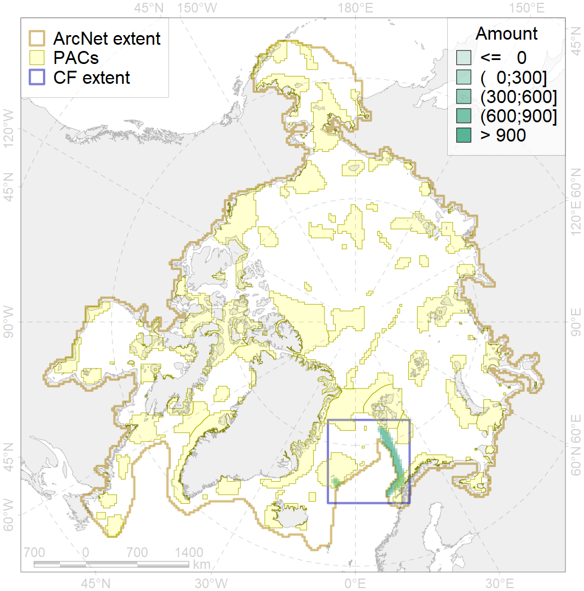
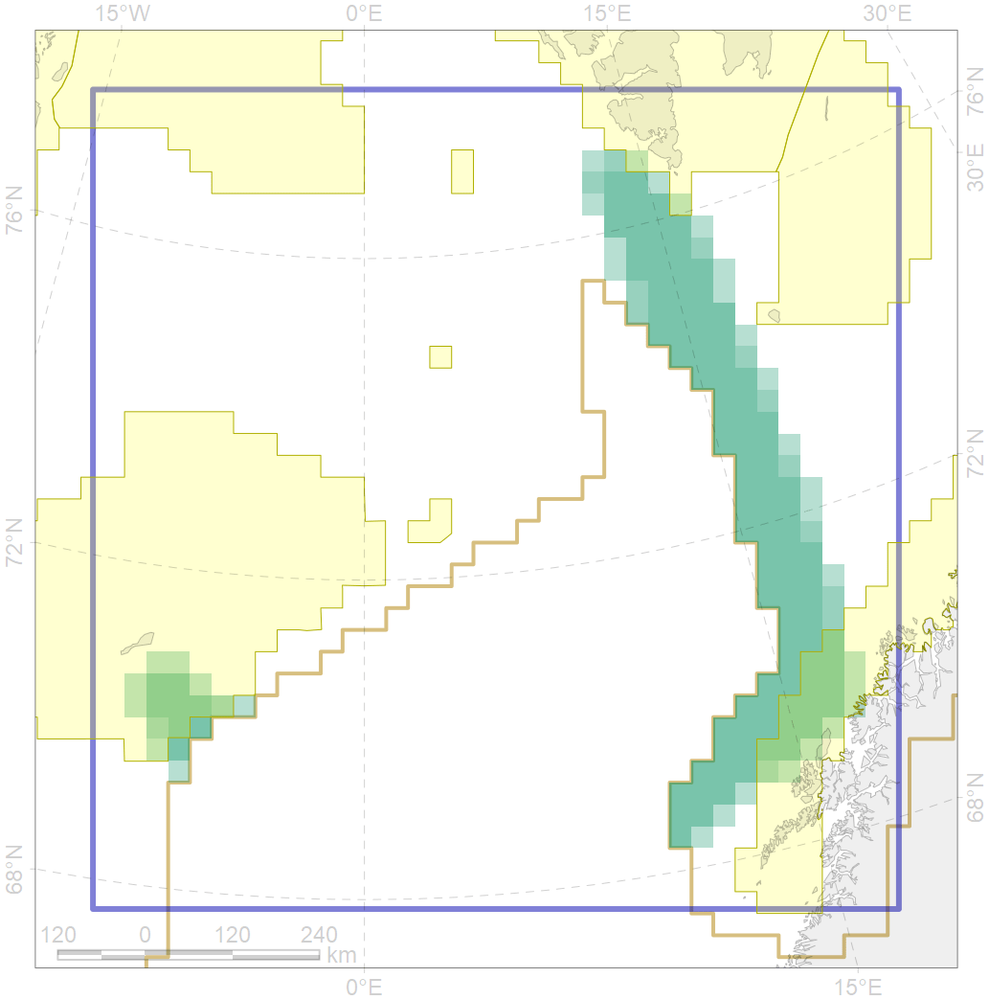

5113

| CF code | 5113 |
| CF name | Sperm whale summer feeding areas in Atlantic |
| Time Period | 1987-2013 |
| Source(s) | Gunnlaugsson et al 2009; Oien 2009; Ramirez-Martinez et al 2017 |
| Seasonality | June-September |
| Depth Horizon | 0-1500 |
| Methodology | Ship and aerial surveys |
| Use Restrictions | |
| Author Name | Filatova |
| Notes | |
| Scenario’s Target | 0.144 |
| Target Achievement | 0.171 (Scenario: 118.5%) |
| PAC | Share of the Total Amount within the PAC | Share of the Target Achievement for the ArcNet | PAC’s Contribution to the Target Achievement |
|---|---|---|---|
| 27 | 10.8%10.8% | 65.6%65.6% | 55.4%55.4% |
| 30 | 0.2% | 1.3% | 1.1% |
| 34 | 6.0%6.9% | 35.4%36.6% | 29.8%30.9% |
| inner | 16.9%17.9% | 102.3%103.5% | 86.3%87.3% |
| outer | 83.1%85.0% | 16.2%24.9% | 13.7%21.0% |
| † supplement values are for area consistence whereas principal values are for Accenter compatible gridded stats |